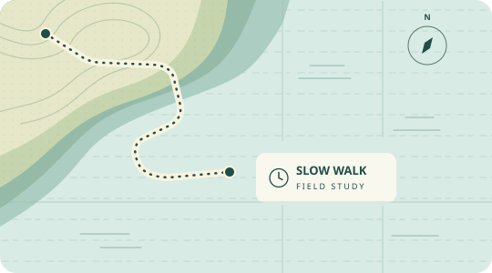

探索手冊 / 07
附近小旅行時段表
先看什麼時段有空，再決定往哪裡走。從集合區、所需時間和路程，排一段適合自己的小旅行。
合成示範 所有場地及場次皆為虛構，只供試排行程，不提供訂位。

01 / 找時間
篩選場次
距離僅用手動選區估算，不代表實際步行路線；不存取定位。
02 / 看時段
探索手冊 / 07
先看什麼時段有空，再決定往哪裡走。從集合區、所需時間和路程，排一段適合自己的小旅行。
合成示範 所有場地及場次皆為虛構，只供試排行程，不提供訂位。

01 / 找時間
距離僅用手動選區估算，不代表實際步行路線；不存取定位。
02 / 看時段